Line Setup
Current changeover and line configuration
Overview
- Line
- —
- Layers
- 3
Receiver hopper weights
Set usable capacity or calculate it with Smart Hoppers.
Weights
How Smart Hoppers work
Smart Hoppers uses the shared hopper circumference, each hopper’s usable height, its assigned recipe resin, and that resin’s measured bulk density. Manual weights remain available at all times.
Receiver Weight Profiles
Shared receiver hopper weights
Profiles
⋯
Recipe
Set recipe percentages and choose which hoppers appear in the timeline
Check percentages
Timeline
Only tracked hoppers • Sorted by upcoming time
0 resins tracked
RT Sync
Optional shared line data across devices
Local only
Tools
Production utilities
Production Summary
Production Summary
ⓘ
Reads layer percentages and resin blends from a printed job traveler.
On a 3- or 5-layer line, you'll be asked which end layer A represents. Hand-written hopper numbers next to a resin are read automatically when legible.
ⓘ
Reads resin blends directly from the dosing controller's material overview screen, or a printout of it. Validated for lines 9-11.
No orientation question - component position maps directly to hopper number. This screen doesn't print layer percentages; you'll enter those on the review screen.
ⓘ
Reads layer/blender settings from a printed heat sheet. On a 3- or 5-layer line, you'll be asked which end layer A represents, same as Job Traveler.
Legible handwriting matters most here. Writing in layer percentages and hopper designations when you fill one out helps it import cleanly.
Help
Operator guide for every section
Guide
Quick Start
Quick StartSet up Resin.Tools in just a few minutes
Six steps from a cold start to a tracked changeover. Everything after that is refinement.
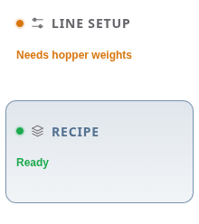
- Connect to your line with RT Sync. The line setup, including layer count, loads automatically.
- Set the changeover deadline, enter the line rate, and verify the receiver hopper weights.
- Build the layer recipe in Recipe.
- Turn on tracking for the hoppers involved in the changeover.
- Open the Timeline to see when each hopper should begin running down.
- Use Production Summary at the end of the run to total material usage for inventory.
Always visible
The status bar
SetupPrepare the line and timing inputs
Two things drive every run-down time: how fast the line runs and how much each hopper holds. Get those right and the Timeline takes care of itself.
Line configurationLeft column
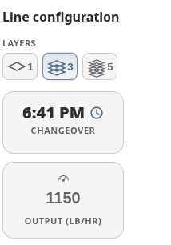
Pick the layer count, set the changeover deadline, and enter the current output in lb/hr.
Connected to RT Sync? Layer count arrives with the line — you won't set it here.
Receiver hopper weightsRight column
Enter the usable pounds each hopper holds — conservative beats optimistic. Without these, run-down times can't be calculated.
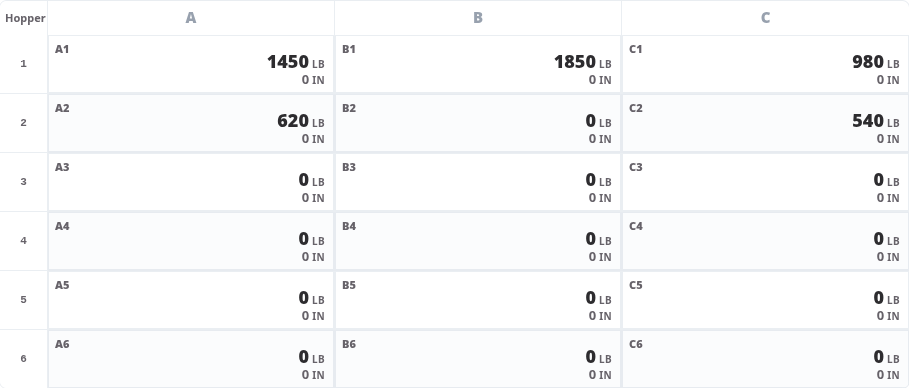
Smart HoppersCalculated capacity
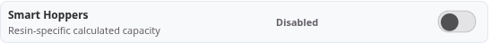
Calculates capacity from hopper dimensions and resin density instead of a typed weight. Add each hopper's usable height and circumference with its wrench icon.
A computed weight (green checkmark) appears only once that resin has a measured bulk density on file. When it appears, it drives the run-down instead of the typed value.
Heads up: Changes save to this browser immediately. Setup warnings call out missing weights and anything else that reduces timing accuracy.
RecipeBuild the layer and resin recipe
Layer percentages, resin names, and hopper blend percentages for the current job. One toolbar at the bottom holds every recipe action.
Layers across, hoppers downRead the grid
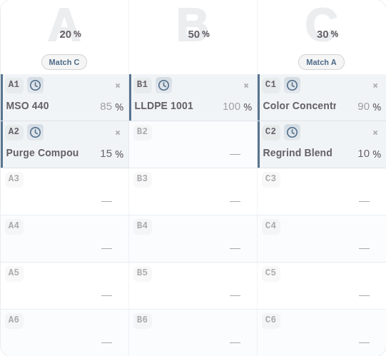
Each column is a layer with its share of total output. Each row is a hopper position feeding that layer.
Layer percentages should total 100%. A problem message appears under a layer only when its hoppers need attention.
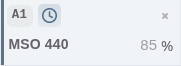
The badge names the position. The clock adds it to the Timeline — colored means tracked. The × clears it. Then the resin name and its blend percentage.
- Enter each layer's percentage of total output, above the grid.
- Type or pick a resin name. Optional — a hopper can carry a percentage without one.
- Fill hoppers 2–6. Hopper 1 is calculated for you as the remainder, so every layer lands on 100%.
- Click the clock on each hopper involved in the changeover.
Where a layer offers Match — B and D, or A and E — it copies that layer's resins and hopper percentages across. It leaves the destination layer's own percentage alone.
The toolbarBottom of the panel
Loading a recipe replaces layer percentages, resin names, and hopper percentages only. Receiver hopper weights and tracking are never touched.
Bulk EditMany hoppers at once
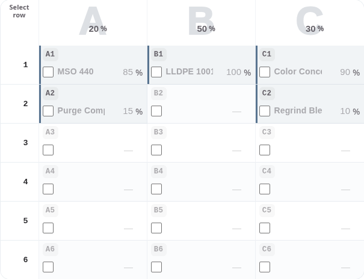
The grid gains a Select row column and clickable layer headings. Pick a whole hopper position across every layer, a whole layer, or cell by cell.
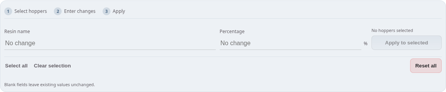
- Select the hoppers — individually, a numbered row, a layer heading, or Select all.
- Enter a resin name, a percentage, or both. Blank fields leave existing values alone.
- Apply to selected. Percentages are rejected where they would push a layer past 100%.
Reset all empties every resin field and clears percentages, tracking, and pump-off states — a clean slate before building a new recipe.
RearrangeMove or swap assignments
Drag one hopper onto another on desktop, or tap a source then a destination on a touch screen. Dropping onto an empty hopper moves the assignment; onto a filled one, they swap — including across layers.
Only the resin and its percentage move. Receiver weight, tracking, and pump-off stay with the physical hopper.
Hopper 1 recalculates after every move, and a move that would make a layer invalid is refused. Undo Last Move steps back, Cancel restores the recipe as it was, Done Rearranging keeps it.
On mobilePhone layout
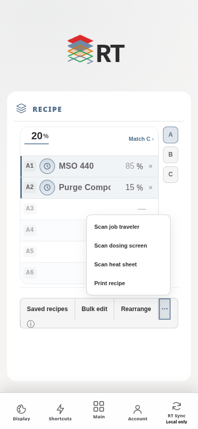
One layer at a time — switch with the A / B / C tabs down the right edge.
Saved Recipes, Bulk Edit, and Rearrange stay on the toolbar. Scan Recipe's three sources and Print Recipe move into the ••• menu.
Bulk Edit opens as a bottom sheet here rather than an inline panel.
TimelineFollow hopper changeover timing
The running order for the changeover: which hopper to pump off next, and when.
Reading the timelineThe list
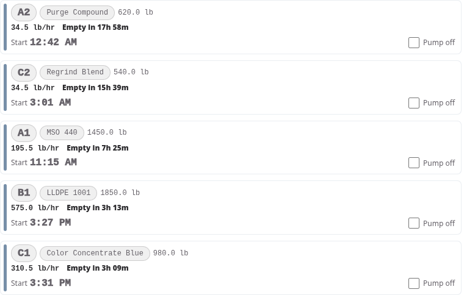
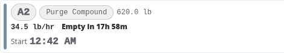
Hopper and resin, how much it holds, how fast it's drawing, and how long until it runs dry. Start is the clock time to begin running it down.
With a changeover deadline set, rows sort by start time. Without one, they sort by time to empty.
Pump off and reset trackingControls
Tick Pump off once you've physically shut a pump down. That row then hides itself unless Show all is on.
Reset tracking untracks every hopper and clears pump-off states, ready for the next job.
On mobilePhone layout
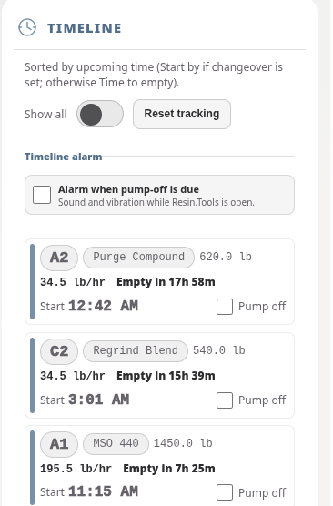
The phone layout is the same list, sized for a glance across the floor.
Turn on Alarm when pump-off is due for sound and vibration while Resin.Tools is open.
RT SyncShare a production line across devices
One shared job state across every device on the line. Resin.Tools works fully offline — connect only when a line should be shared.
Create the lineFirst device
- Create one permanent workspace for the line and give this device a recognizable label.
- Generate a four-character link code.
Join itEvery other device
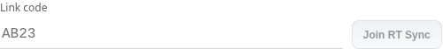
Open RT Sync, type the code, and select Join RT Sync.
Codes are single-use and expire after 30 minutes.
Knowing where you standDay to day
Local changes always save first, then upload. Other devices update without a refresh.
When something is pending, a list appears naming exactly what hasn't synced — with a Discard option for anything stuck against an unreachable workspace.
Line actionsManaging the workspace
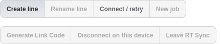
Only the owner can remove another device or delete the shared line, and must transfer ownership before leaving.
Phones show a simplified panel — current line, device label, sync details, Refresh, Disconnect, Leave. Creating and naming lines, link codes, and device administration stay on desktop. Tap the dock's RT Sync status to refresh immediately.
ToolsProduction calculators and resin reference
Five utilities, one at a time, so the workspace stays focused.
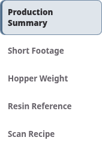
End of run
Production Summary
Build the recipe first, then enter production and scrap pounds. Totals are split by material using the current recipe percentages.
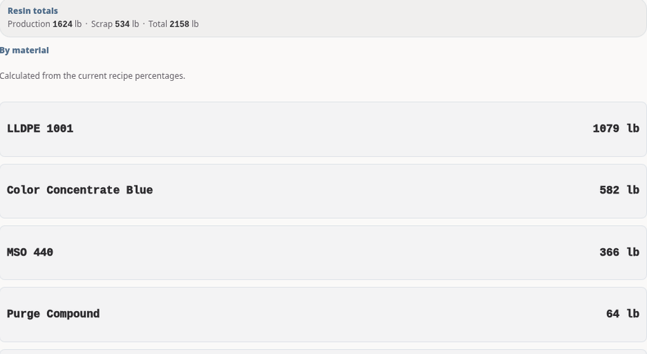
Scan RecipeFill Recipe from a photo
Photograph a paper or screen source and Resin.Tools drafts the recipe for you. Nothing is written until you select Apply.
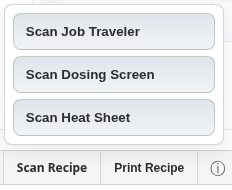
Three sources, from the Recipe toolbar or the Tools index. Each reads a different document, so pick the one in your hand.
Layer order is taken from the line you're connected to, so no source asks which end layer A is on.
Job TravelerSource
- Photograph the product blend table. Hand-written hopper numbers beside a resin are read automatically when legible.
Dosing ScreenSource
- Photograph the dosing controller's material overview screen, or a printout. Validated for lines 9–11.
- Component position maps straight to hopper number.
- Enter layer percentages on the review screen; this source never prints them.
Heat SheetSource
- Photograph the blender / layer settings sheet. Unused hoppers are simply absent, not zero rows.
- Legible handwriting matters most here. Writing in layer percentages and hopper designations helps it import cleanly.
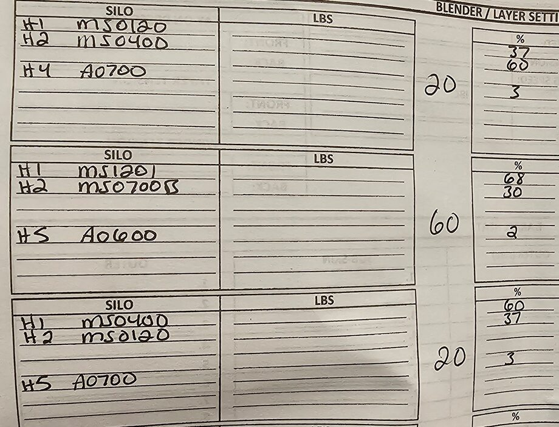
Always review before applying. A scan can misread handwriting or a poor photo. Check every layer, hopper, and percentage on the review screen, and watch its warnings about totals that miss 100%.
ChangelogA running history of what's been added, most recent first
Smart Hopper, RT Sync & admin refinements - August 11, 2026
- Line 9 now automatically uses Main + 1–5 hopper naming while linked, including when temporarily offline. Other lines, local-only workspaces, and disconnected devices use 1–6; changing the label convention never changes saved hopper assignments.
- Added the admin-only Bulk Density Measurement tool. It calculates measured bulk density and packing factor from the calibrated container, can update only the selected resin's bulk-density value after confirmation, and immediately refreshes Resin Reference and Smart Hopper calculations.
- Refined Receiver Hopper Weights and Recipe Setup with denser, more readable mobile matrices, clearer Smart Hopper states, and consistent action bars for profiles, recipes, bulk editing, and rearranging.
- Polished the compact Timeline, RT Sync connection states, top-level section headers, and desktop workspace shell. The signed-in Account/Admin menu now remains sharp, clickable, and correctly anchored after login.
Mobile workspace redesign & quick actions - August 9, 2026
- Mobile now opens to a focused tile home instead of a long card list. Each section opens on its own, with a consistent return-to-tiles control; Tools and Help also have their own tile indexes.
- Added a mobile Appearance tile with five tile treatments and two background options. Minimal is now the default tile treatment, and both Gruvbox Light and Gruvbox Dark receive matching warm, textured backgrounds and retro-styled tiles.
- Added a timeline option to alert when a tracked hopper reaches Pump off, with sound, vibration, an in-app alert, and notifications where the browser permits them.
- Added the animated Quick Actions button on the mobile tile home, providing one-tap access to Scan Dosing Screen and Production Summary.
- Improved mobile navigation and polish throughout: section and tool headings are clearer, Scan Recipe controls are easier to use, and every main tile - including Admin Login - has a matching SVG icon.
Recipe Setup polish, Timeline cleanup & readability - August 7, 2026
- Recipe Setup on mobile: redesigned the layer percentage and hopper cells with squared chips, a bolder hopper-designation badge, and easier-to-tap track buttons; the hopper-designation badge and a refined percentage/copy layout were also carried over to desktop.
- Recipe Setup's action buttons (Saved Recipes, Bulk edit, Rearrange, Scan Recipe, Print Recipe) are now one unified toolbar strip instead of separate floating buttons, on both desktop and mobile. Fixed a bug where this caused the Scan Recipe popup to get clipped/hidden.
- Fixed black-looking text in light themes across the Recipe chart and Line Setup - resin names, hopper percentages, row headers, warning pills, and more now use a proper dark grey.
- The RT Sync join-code field now forces uppercase as you type, matching how link codes are printed/shared.
- Timeline: removed the Timeline style picker and kept the single "Compact Command" card look. Fixed the "Start by" time reading as near-black text, and a mobile layout bug where the time/Pump off row could slide off the left edge of the card.
- Changed the default theme to Industrial Slate. Also tried out several Header style options (Bold Slab, Editorial Serif, Rounded Grotesk, Wide Display) via a temporary picker, then removed the picker and kept Wide Display as the permanent header typography.
Recipe Scanner & mobile polish - August 5-6, 2026
- Added Scan Recipe: reads a photo of a Job Traveler, a Dosing Screen, or a Heat Sheet and fills Recipe Setup automatically, with a review screen before anything is applied. A camera-icon shortcut in the mobile status bar jumps straight to it.
- RT Sync now shows exactly which changes haven't synced yet, with a way to discard one that's stuck against an unreachable line. Tapping the mobile footer status refreshes and retries.
- Recipe Setup on mobile: cards open one at a time instead of stacking up, collapsed card titles are bigger with the subtitle hidden until opened, swipe left/right to switch layers, hopper rows now fit on a single line, and Layers A/B can copy from E/D (in addition to C/D/E copying from A/B).
- Fixed Production Summary showing a stale, hidden number after reloading the page.
Reliability & appearance - August 3-4, 2026
- Added admin-assisted Workspace Recovery, for reconnecting a line computer after its browser data is reset.
- Added a desktop Print Recipe button.
- Added a warning when the changeover time looks stale instead of silently rolling it forward to the next day.
- Five more color themes (Rosé Pine, Rosé Pine Dawn, Everforest, Everforest Light, One Dark) and a Header style preference.
- Reworked mobile's Bulk Edit and Rearrange Hoppers to support tap-to-move, not just drag.
- Ongoing RT Sync reliability work to cut unnecessary syncing and keep multiple devices in sync smoothly.
Resin catalog & shared configurations - August 1-2, 2026
- Added the Supabase-backed resin catalog with an admin-only editor (add, edit, activate/deactivate resins).
- Added shared cloud recipes and receiver-weight profiles for an RT Sync workspace - save, load, rename, duplicate, delete, and favorite recipes.
- Added desktop hopper rearrangement (drag-and-drop, with Undo/Cancel/Done).
- Added customizable view density and surface style, and the current Layer Stack logo/RT branding.
RT Sync & rebrand - late July 2026
- Added RT Sync: share a live production line across devices.
- Redesigned receiver hopper weight entry as a selectable matrix, and reworked hopper percentage editing.
- Added built-in resin autocomplete, a starter resin catalog, and resin material information (density, typical uses, handling notes).
- Added the Production Summary, Short Footage, and Hopper Weight calculators.
- Added this Help guide, and settled on the app's name: Resin.Tools.
Initial build - December 2025 to January 2026
- The original hopper run-down calculator: weight and percentage entry, run-down formulas, and the first responsive layout.
Resin DatabaseManage active and inactive catalog records
Workspace ManagementRecover access and respond to RT Sync incidents
Reconnect a line computer after a browser reset, remotely disconnect a linked device, or permanently remove a workspace during an incident.
Diagnostic details
Linked devices
Bulk Density MeasurementMeasure and save resin-specific bulk density
Fill the same dry container to the same level used for the water calibration. Enter resin weight after subtracting the bucket.
Measured resin weight must exclude the bucket. Polymer density is used only to calculate packing factor.